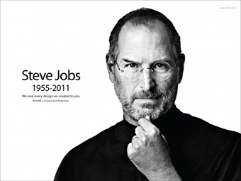

Tribute to Steve Jobs

“Si vives cada día de tu vida como si fuera el último, algún día realmente tendrás razón”.
TIMELINE
1955
'Steven Paul Jobs' is born
1975
Steve and Woz assemble Apple 1 Computer
1977
Prototype Apple II shown in WCC Faire
2000
Steve Jobs officially becomes Apple's CEO
2008
Steve jobs introduces Macbook Air and App store along with iPhone 3G